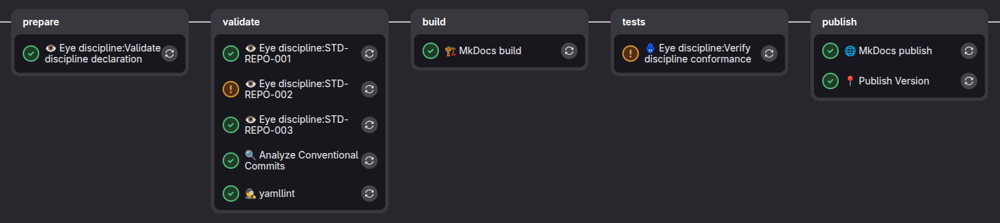

GitLab CI jako bramka jakości dyscypliny¶
Plik ci/gitlab/verification-process/.gitlab-ci.yml jest centralnym pipeline'em weryfikacji dyscypliny dla GitLab CI. Repozytorium aplikacji nie powinno kopiować całego procesu do siebie. W głównym pipeline CI powinno podpiąć proces jako zewnętrzny include i potraktować go jako bramkę jakości.
Najważniejszy element integracji:
include:
- project: dev.rachuna/eye-of-discipline
file: ci/gitlab/verification-process/.gitlab-ci.yml
ref: main
Taki include dodaje do pipeline'u aplikacji:
- walidację
discipline.yaml, - joby standardów wygenerowane z dyscypliny,
- agregację wyników do
conformance.json, - decyzję bramki jakości.
Miejsce w głównym CI¶
Pipeline weryfikacji dyscypliny jest częścią głównego CI aplikacji. Nie zastępuje builda, testów jednostkowych ani deploymentu. Działa jako dodatkowa bramka jakości, która odpowiada na pytanie:
Minimalny przykład użycia w repozytorium aplikacji:
stages:
- prepare
- validate
- tests
- build
- deployment
include:
- project: dev.rachuna/eye-of-discipline
file: ci/gitlab/verification-process/.gitlab-ci.yml
ref: main
Jeżeli aplikacja ma własne stage'e, muszą one zawierać stage'e używane przez pipeline dyscypliny:
| Stage | Rola w procesie dyscypliny |
|---|---|
prepare |
walidacja deklaracji discipline.yaml |
validate |
joby standardów i pojedyncze pomiary |
tests |
agregacja wyników i decyzja bramki jakości |
Wymagane pliki w repozytorium aplikacji¶
Repozytorium aplikacji musi zawierać:
| Plik | Rola |
|---|---|
discipline.yaml |
deklaracja wersji dyscypliny, atestacji i odstępstw |
Repozytorium aplikacji nie musi trzymać lokalnej kopii skryptów:
bin/verification_process/discipline_validate,bin/verification_process/discipline_verify.
Pipeline pobiera je z repozytorium dyscypliny wskazanego w discipline.yaml.
Minimalna deklaracja:
apiVersion: eye-of-discipline.rachuna.dev/v1
kind: Discipline
metadata:
name: my-service
spec:
discipline:
repository: dev.rachuna/eye-of-discipline
ref: main
spec.discipline.repository mówi, skąd pobrać dyscyplinę. spec.discipline.ref mówi, której wersji albo gałęzi dyscypliny użyć do pomiaru.
Zmienne pipeline'u¶
Centralny pipeline definiuje wartości domyślne:
| Zmienna | Domyślna wartość | Znaczenie |
|---|---|---|
DISCIPLINE_FILE |
discipline.yaml |
plik deklaracji zespołu |
CONFORMANCE_FILE |
conformance.json |
artefakt końcowy z wynikiem QA dyscypliny |
EYE_DISCIPLINE_REPO |
dev.rachuna/eye-of-discipline |
fallback repozytorium dyscypliny |
EYE_DISCIPLINE_REF |
main |
fallback ref procesu |
EYE_DISCIPLINE_VALIDATE_SCRIPT_PATH |
bin/verification_process/discipline_validate |
ścieżka walidatora w repozytorium dyscypliny |
EYE_DISCIPLINE_VERIFY_SCRIPT_PATH |
bin/verification_process/discipline_verify |
ścieżka agregatora w repozytorium dyscypliny |
W praktyce najważniejsze wartości powinny pochodzić z discipline.yaml, bo to deklaracja aplikacji określa wersję dyscypliny. Zmienne EYE_DISCIPLINE_* są fallbackiem technicznym.
Struktura procesu¶
Centralny pipeline składa się z czterech części:
| Element | Job / plik | Odpowiedzialność |
|---|---|---|
| lista jobów standardów | ci/gitlab/verification-process/cheks_jobs.yml |
dołącza joby standardów opublikowane przez dyscyplinę |
| template standardu | .dyscypline |
pobiera dyscyplinę, obsługuje odstępstwa i zapisuje results/{STD_ID}.json |
| walidacja deklaracji | 👁️ Eye discipline:Validate discipline declaration |
sprawdza kontrakt discipline.yaml |
| agregacja wyników | 🪬 Eye discipline:Verify discipline standards |
buduje conformance.json i zwraca kod bramki jakości |
Pipeline zaczyna się od include jobów standardów:
W wersji eksportowanej przez centralny include jest to część repozytorium dyscypliny. Aplikacja podłącza tylko główny plik ci/gitlab/verification-process/.gitlab-ci.yml.
Przykładowy pipeline¶

Walidacja deklaracji¶
Job:
działa w stage'u prepare. Pobiera walidator z repozytorium dyscypliny:
encoded_project="${DISCIPLINE_REPOSITORY//\//%2F}"
encoded_path="${EYE_DISCIPLINE_VALIDATE_SCRIPT_PATH//\//%2F}"
validate_url="${CI_API_V4_URL}/projects/${encoded_project}/repository/files/${encoded_path}/raw?ref=${DISCIPLINE_REF}"
Następnie uruchamia:
Walidator sprawdza kontrakt deklaracji:
- obecność pliku,
apiVersion,kind,metadata.name,spec.discipline.repository,spec.discipline.ref,- strukturę atestacji,
- strukturę odstępstw.
Błąd walidacji oznacza błąd deklaracji, a nie niezgodność ze standardem.
Joby standardów¶
Każdy standard ma własny job. Definicje jobów są generowane w procesie wytwórczym dyscypliny i publikowane w:
Obowiązuje zasada:
Job standardu rozszerza .dyscypline, ustawia STD_ID, uruchamia właściwy bin/checks i zapisuje raport:
Jeżeli dla standardu istnieje aktywne odstępstwo, raport ma status waived:
{"key":"STD-REPO-002","status":"waived","exception":{"check":"STD-REPO-002","reason":"repozytorium jest w trakcie migracji","owner":"platform-team","expires":"2026-09-30"}}
Pełny kontrakt joba, template'u .dyscypline, zmiennych i raportu standardu opisuje dokument Definicja joba weryfikującego.
Template .dyscypline¶
Template .dyscypline jest wspólną bazą dla jobów standardów. Odpowiada za:
- logowanie do GitLab przez
glab, - pobranie repozytorium dyscypliny wskazanego w
discipline.yaml, - skopiowanie narzędzi
bin/z pobranej wersji dyscypliny, - sprawdzenie, czy dla
STD_IDistnieje aktywne odstępstwo, - zapis raportu
results/{STD_ID}.json, - wystawienie artefaktu
results/, - wypisanie linku do dokumentacji standardu.
Aktywne odstępstwo kończy job kodem 101. Template dopuszcza:
Kod 101 oznacza aktywne odstępstwo. Kod 120 oznacza brak albo niezaimplementowany check. Oba przypadki są raportowane, ale nie są interpretowane jako zwykły sukces checka.
Jeżeli expires w odstępstwie jest wcześniejsze niż bieżąca data UTC, odstępstwo jest ignorowane i check uruchamia się normalnie.
Agregacja wyników¶
Job:
działa w stage'u tests. Pobiera agregator z repozytorium dyscypliny:
encoded_project="${DISCIPLINE_REPOSITORY//\//%2F}"
encoded_path="${EYE_DISCIPLINE_VERIFY_SCRIPT_PATH//\//%2F}"
verify_url="${CI_API_V4_URL}/projects/${encoded_project}/repository/files/${encoded_path}/raw?ref=${DISCIPLINE_REF}"
Następnie uruchamia:
./.discipline_verify \
--results-dir results \
--discipline-file "$DISCIPLINE_FILE" \
--output "$CONFORMANCE_FILE"
Skrypt czyta results/*.json, buduje conformance.json i wypisuje komunikat przeznaczony dla odbiorcy pipeline'u.
Możliwe statusy końcowe:
| Status | Znaczenie |
|---|---|
pass |
wszystkie standardy przeszły |
pass_with_waivers |
są niezgodności, ale wszystkie są objęte aktywnym odstępstwem |
fail |
istnieje niezgodność bez aktywnego odstępstwa |
error |
nie udało się odczytać części raportów |
no_checks |
nie znaleziono results/*.json |
Bramka jakości¶
Job agregacji jest bramką jakości dla głównego pipeline'u CI.
Kody wyjścia mają następujące znaczenie:
| Kod | Znaczenie | Skutek |
|---|---|---|
0 |
wszystko ok | pipeline przechodzi |
101 |
nie ok, ale wszystkie niezgodności mają aktywne odstępstwo | job jest allow_failure, pipeline może przejść |
1 |
nie ok i brak odstępstwa albo błąd agregacji | pipeline jest zablokowany |
Pipeline ma:
Dzięki temu aktywne odstępstwo jest widoczne w logu i w conformance.json, ale nie blokuje głównego pipeline'u. Brak odstępstwa dla realnej niezgodności kończy się kodem 1 i blokuje pipeline.
Przykładowe komunikaty:
⚠️ Bramka jakości dyscypliny: OK z odstępstwem. Niezgodności są objęte ważnym odstępstwem.
- STD-REPO-002: odstępstwo do 2026-09-30; właściciel: platform-team; powód: repozytorium jest w trakcie migracji
❌ Bramka jakości dyscypliny: BLOKADA. Wykryto niezgodności bez ważnego odstępstwa.
- STD-REPO-003: results/STD-REPO-003.json
Artefakty¶
Joby standardów zapisują:
Job agregacji zapisuje:
conformance.json jest artefaktem CI. Nie powinien być commitowany do repozytorium aplikacji, ponieważ opisuje wynik konkretnego uruchomienia pipeline'u.
Minimalna integracja¶
Minimalna integracja w repozytorium aplikacji składa się z dwóch elementów:
- Plik
discipline.yaml. - Include centralnego pipeline'u:
include:
- project: dev.rachuna/eye-of-discipline
file: ci/gitlab/verification-process/.gitlab-ci.yml
ref: main
Repozytorium aplikacji nie musi przenosić cheks_jobs.yml, discipline_validate ani discipline_verify. Są one częścią wersjonowanego procesu w repozytorium dyscypliny.